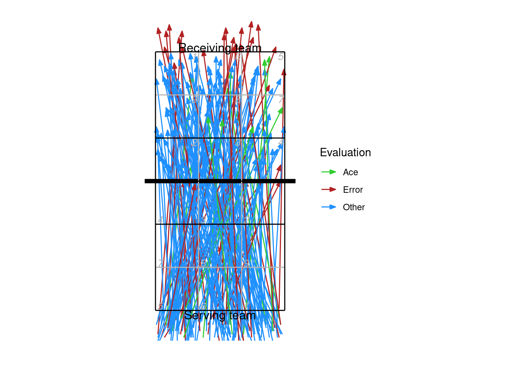
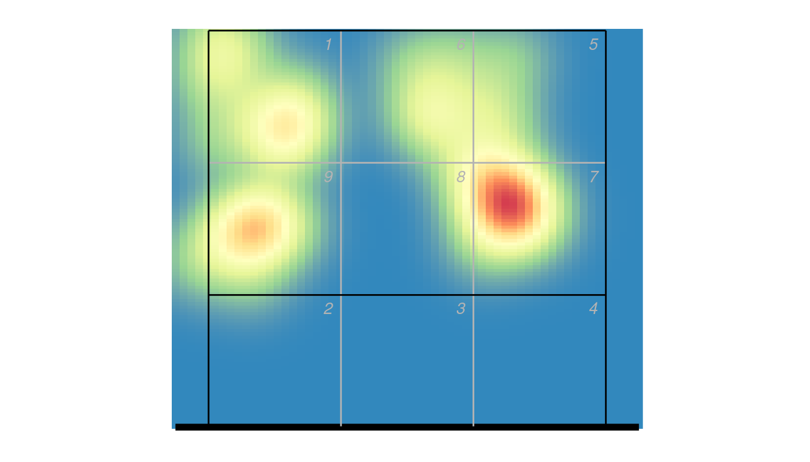
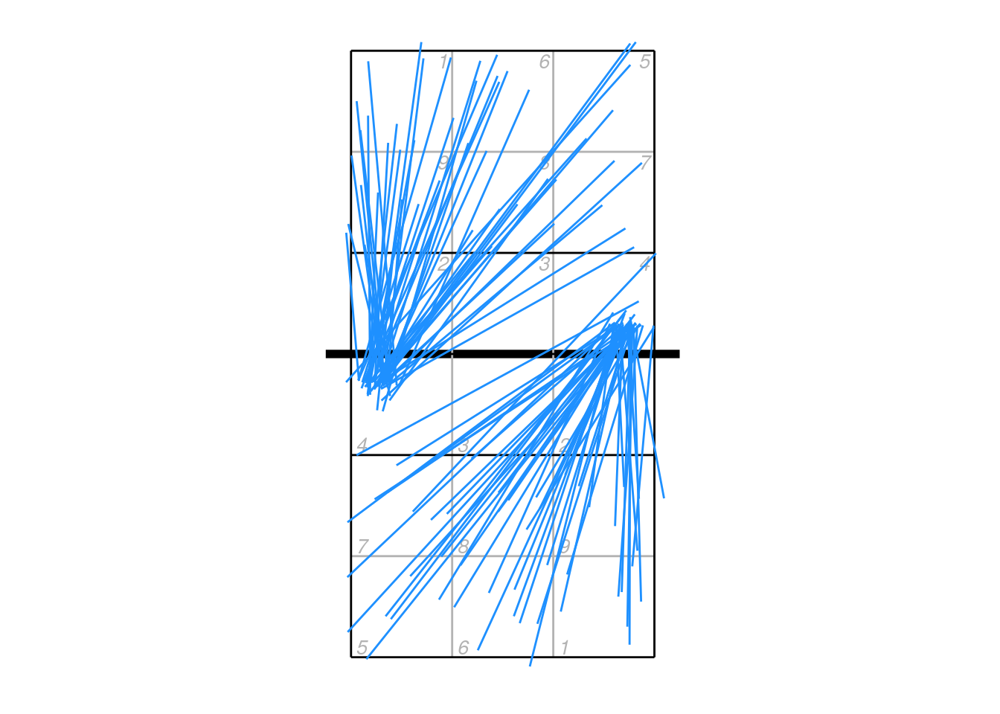

9 Court plots
9.1 Background on location information
9.1.1 Zones and subzones
Scouts using DataVolley make use of zones (and optionally subzones) for all skills. Cones can alternatively be used for attack directions (instead of recording the end zone). Attacks cannot be scouted with both zones and cones in one file, DataVolley supports only one or the other. The zone/cone associated with each action is stored in the DataVolley file as the zone/cone number, without any inherent direction (side of the court) and without any actual location information. To plot the location of an action on a court diagram, we first generate actual court coordinates using the dv_xy() function. We pass it the zone number and which end of the court diagram (upper or lower) we wish to plot onto — let’s say an action from zone 4:
dv_xy(zones = 4, end = "lower")
#> x y
#> 1 1 3So zone 4 is located at x = 1 and y = 3. The coordinate system used by openvolley packages looks like this:

9.1.2 Coordinates
Actions can also be scouted with coordinates (the more precise locations, that are entered with the mouse click on the small court diagram). These are stored separately to the zone information in the DataVolley file. Coordinates can be used alongside of zones or cones, but not all scouts use coordinates. Coordinates are stored in the file as a single index from 1-10000, where 1 starts in the bottom-left on the lower side of the court diagram, across the row to 100 at the bottom-right, and it fills row-wise until 9901 is the top-left on the upper side of the court diagram and 10000 is the top-right. That covers both sides of the court, so coordinates are stored in the dvw file with an actual court location (and side) associated with them.
When a DataVolley file is read into R using dv_read, these coordinates are stored without alteration in the start_coordinate, mid_coordinate, and end_coordinate columns. They are also converted to the same reference system shown above (using the dv_index2xy() function), and these values stored in the start_coordinate_x, start_coordinate_y, mid_coordinate_x, mid_coordinate_y, end_coordinate_x, and end_coordinate_y columns.
9.1.3 VBStats
VBStats files use only coordinates internally, and on a different native grid to the DataVolley grid. When a VBStats file is read into R using the pv_read function, these coordinates are converted to the same coordinate system used above. Each coordinate is also converted to its corresponding zone and subzone, so these are also available when using VBStats files in R, even though VBStats itself doesn’t allow scouting with zones and subzones.
9.2 Plotting by zone or subzone
library(ggplot2)
library(dplyr)
x <- dv_read(dv_example_file(1))
## calculate attack frequency by zone, per team
px <- plays(x)
attack_rate <- px %>% dplyr::filter(skill == "Attack") %>%
group_by(team, start_zone) %>% dplyr::summarize(n_attacks = n()) %>%
mutate(rate = n_attacks/sum(n_attacks)) %>% ungroup
## add x, y coordinates associated with the zones
attack_rate <- cbind(attack_rate, dv_xy(attack_rate$start_zone, end = "lower"))
## additionally specify the subzone to dv_xy if you want to plot by subzone (and your data
## were scouted with subzones)
## for team 2, these need to be on the top half of the diagram
tm2i <- attack_rate$team == teams(x)[2]
attack_rate[tm2i, c("x", "y")] <- dv_flip_xy(attack_rate[tm2i, c("x", "y")])
ggplot(attack_rate, aes(x, y, fill = rate)) + geom_tile() + ggcourt(labels = teams(x)) +
scale_fill_gradient2(name = "Attack rate")9.3 Plotting by cone
When scouting by cones, attacks are recorded as a direction (angle) rather than an ending point (zone or subzone). Let’s first make an attack chart of cones using arrows to indicate the direction, and varying the width and colour of the line according to the number of attacks made in each direction:
x <- dv_read(ovdata_example("190301_kats_beds"))
px <- plays(x)
## select left-side (X5) attacks
attack_rate <- px %>% dplyr::filter(attack_code == "X5") %>%
group_by(start_zone, end_cone) %>% dplyr::summarize(n_attacks = n()) %>%
mutate(rate = n_attacks/sum(n_attacks)) %>% ungroup
## add starting locations
attack_rate <- bind_cols(attack_rate, dv_xy(attack_rate$start_zone, end = "lower"))
## and end locations
attack_rate <- bind_cols(attack_rate, dv_cone2xy(start_zones = attack_rate$start_zone,
end_cones = attack_rate$end_cone, end = "upper"))
ggplot(attack_rate, aes(x, y, xend = ex, yend = ey, colour = rate, size = rate)) +
ggcourt(labels = NULL) +
geom_segment(arrow = arrow(length = unit(2, "mm"), type = "closed", angle = 20)) +
scale_colour_distiller(palette = "OrRd", direction = 1, name = "Attack rate") +
guides(size = "none")Or we can plot the cones using their polygons:
cxy <- dv_cone2xy(start_zones = attack_rate$start_zone, end_cones = attack_rate$end_cone,
as = "polygons")
## this returns coordinates as list columns, unpack these to use with ggplot
## also add an identifier for each polygon
cxy <- data.frame(cx = unlist(cxy$ex), cy = unlist(cxy$ey),
id = unlist(lapply(seq_len(nrow(cxy)), rep, 4)))
attack_rate <- attack_rate %>% mutate(id = row_number()) %>% left_join(cxy, by = "id")
ggplot(attack_rate, aes(cx, cy, group = id, fill = rate)) +
ggcourt(labels = NULL) +
geom_polygon() +
scale_fill_distiller(palette = "OrRd", direction = 1, name = "Attack rate")9.4 Plotting by line segment
Line segments can be used with zones/subzones, cones (as in the example above), or coordinates.
## take just the serves from the play-by-play data
xserves <- subset(px, skill == "Serve")
## if the file had been scouted with coordinates included, we could plot them directly
## this file has no coordinates, so we'll fake some up for demo purposes
coords <- dv_fake_coordinates("serve", xserves$evaluation)
xserves[, c("start_coordinate", "start_coordinate_x", "start_coordinate_y",
"end_coordinate", "end_coordinate_x", "end_coordinate_y")] <- coords
## now we can plot these
xserves$evaluation[!xserves$evaluation %in% c("Ace", "Error")] <- "Other"
ggplot(xserves, aes(start_coordinate_x, start_coordinate_y,
xend = end_coordinate_x, yend = end_coordinate_y, colour = evaluation)) +
geom_segment(arrow = arrow(length = unit(2, "mm"), type = "closed", angle = 20)) +
scale_colour_manual(values = c(Ace = "limegreen", Error = "firebrick", Other = "dodgerblue"),
name = "Evaluation") +
ggcourt(labels = c("Serving team", "Receiving team"))
9.5 Heatmaps
Heatmap-style plots can be generated using a kernel density estimator. This takes a discrete number of location observations and attempts to estimate their corresponding (continuous) distribution across the court.
For example, take these attack ending coordinates:
ggplot(px2 %>% dplyr::filter(skill == "Attack"), aes(end_coordinate_x, end_coordinate_y)) +
ggcourt(labels = NULL, court = "upper") +
geom_point(colour = "dodgerblue")
As a heatmap, using the ovlytics::ov_heatmap_kde function:
library(ovlytics)
## first generate the heatmap kernel density estimate
hx <- ov_heatmap_kde(px2 %>% dplyr::filter(skill == "Attack") %>% dplyr::select(end_coordinate_x, end_coordinate_y),
resolution = "coordinates", court = "upper")
## then plot it
ggplot(hx, aes(x, y, fill = density)) +
scale_fill_distiller(palette = "Spectral", guide = "none") +
geom_raster() +
ggcourt(labels = NULL, court = "upper") ## plot the court last, so that the lines overlay the heatmapThe smoothness of the heatmap is automatically set depending on the resolution value (“subzones” or “coordinates”), but can be controlled by the bw parameter in ov_heatmap_kde if you wish to change it. You can alternatively use stat_density_2d to generate the density estimate:
ggplot(px2 %>% dplyr::filter(skill == "Attack"), aes(end_coordinate_x, end_coordinate_y)) +
stat_density_2d(geom = "raster", aes_string(fill = "..density.."), contour = FALSE, h = 0.85, n = c(60, 120)) +
scale_fill_distiller(palette = "Spectral", guide = "none") +
ggcourt(labels = NULL, court = "upper")
If you need more control over the heatmap, you may need to call e.g. MASS::kde2d() directly to construct the density estimate and plot it with geom_raster.
9.6 Changing direction
Coordinates might not appear in the dvw file in any particular orientation (i.e. starting consistently on one side of the court).
xattack <- px2 %>% dplyr::filter(skill == "Attack")
ggplot(xattack, aes(start_coordinate_x, start_coordinate_y, xend = end_coordinate_x, yend = end_coordinate_y)) + ggcourt(labels = NULL) +
geom_segment(colour = "dodgerblue")
If we wish to plot all attacks so that they start on the same side of the court, we first need to figure out which ones need to be flipped around. The centre line of the court is at y = 3.5, so we can find any attacks that start on the upper side:
toflip <- which(xattack$start_coordinate_y > 3.5)And then flip just those attacks so that they start on the lower half of the court:
xattack$start_coordinate_x[toflip] <- dv_flip_x(xattack$start_coordinate_x[toflip])
xattack$start_coordinate_y[toflip] <- dv_flip_y(xattack$start_coordinate_y[toflip])
xattack$mid_coordinate_x[toflip] <- dv_flip_x(xattack$mid_coordinate_x[toflip])
xattack$mid_coordinate_y[toflip] <- dv_flip_y(xattack$mid_coordinate_y[toflip])
xattack$end_coordinate_x[toflip] <- dv_flip_x(xattack$end_coordinate_x[toflip])
xattack$end_coordinate_y[toflip] <- dv_flip_y(xattack$end_coordinate_y[toflip])Or a little more succinctly using dplyr functions:
xattack[toflip, ] <- xattack[toflip, ] %>%
mutate(across(all_of(c("start_coordinate_x", "mid_coordinate_x", "end_coordinate_x")), dv_flip_x),
across(all_of(c("start_coordinate_y", "mid_coordinate_y", "end_coordinate_y")), dv_flip_y))Now plot it:
ggplot(xattack, aes(start_coordinate_x, start_coordinate_y, xend = end_coordinate_x, yend = end_coordinate_y)) + ggcourt(labels = NULL) +
geom_segment(colour = "dodgerblue")
9.7 Plotting mid-coordinates
The mid coordinates can be used by the scout to indicate e.g. an attack that deflected off the block. In these cases, it can be misleading to plot just the start and end locations connected by a straight line segment. Consider an attack that came off the block and went back into the attacker’s court — by plotting just the start and end points it would appear to go directly backwards.
## example data
px2 <- data.frame(start_coordinate_x = c(0.75, 0.8), start_coordinate_y = c(3.25, 3.25),
mid_coordinate_x = c(NA, 1.4), mid_coordinate_y = c(NA, 3.5),
end_coordinate_x = c(1.1, 2), end_coordinate_y = c(5.5, 1.5))
ggplot(px2, aes(start_coordinate_x, start_coordinate_y, xend = end_coordinate_x, yend = end_coordinate_y)) + ggcourt(labels = NULL) +
geom_segment(colour = "dodgerblue",
arrow = arrow(length = unit(2, "mm"), type = "closed", angle = 20, ends = "last"))In these cases it is better to plot the mid point as well, but we need to cope with the fact that some mid-coordinates will be missing (NA):
ggplot(px2, aes(start_coordinate_x, start_coordinate_y, xend = end_coordinate_x, yend = end_coordinate_y)) + ggcourt(labels = NULL) +
## lines with no midpoint
geom_segment(data = px2[is.na(px2$mid_coordinate_x), ], colour = "dodgerblue",
arrow = arrow(length = unit(2, "mm"), type = "closed", angle = 20, ends = "last")) +
## start to mid for lines with midpoint, no ending arrow
geom_segment(data = px2[!is.na(px2$mid_coordinate_x), ], aes(xend = mid_coordinate_x, yend = mid_coordinate_y), colour = "dodgerblue") +
## mid to end for lines with midpoint
geom_segment(data = px2[!is.na(px2$mid_coordinate_x), ], aes(x = mid_coordinate_x, y = mid_coordinate_y), colour = "dodgerblue",
arrow = arrow(length = unit(2, "mm"), type = "closed", angle = 20, ends = "last"))